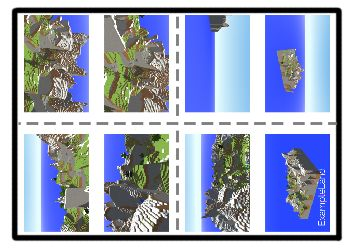
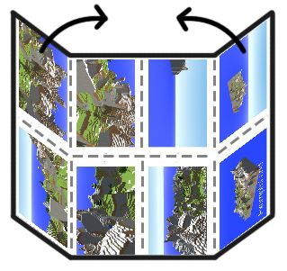
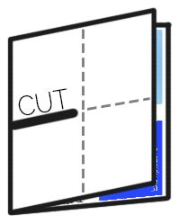
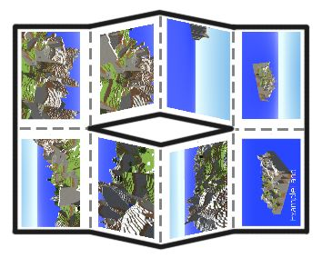
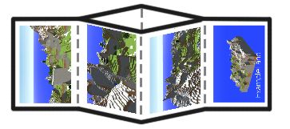
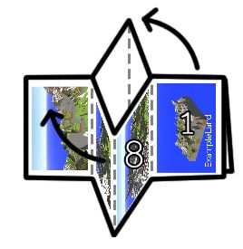
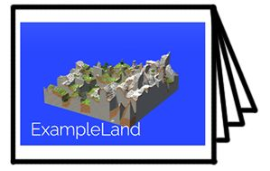

Step 1: Print out your zine.
Step 2: Fold the page in half, in both directions.

Step 3: On the long edge, fold the page again, into quarters.

Step 4: Fold the page in half along the long edge, and cut halfway through the page, on the dotted line.

Step 5: Unfold your fage back fla. You should see a cut right in the middle of the page.

Step 6: Fold the page back in half along the short edge.

Step 7: Fold the page into a plus shape, and fold the zine in a into a booklet, with pages 1 and 8 being on the outside.

Step 8: Done! Enjoy your new, free, finite(less) zine.

Images originally taken from here, and have been edited under the CC BY-SA 3.0 licence